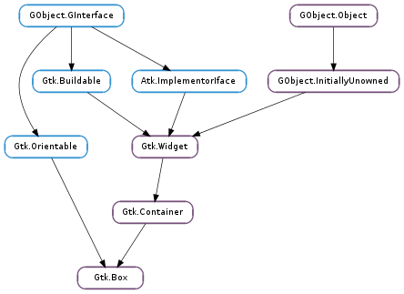

| static | new(orientation, spacing) |
| get_baseline_position() | |
| get_homogeneous() | |
| get_spacing() | |
| pack_end(child, expand, fill, padding) | |
| pack_start(child, expand, fill, padding) | |
| query_child_packing(child) | |
| reorder_child(child, position) | |
| set_baseline_position(position) | |
| set_child_packing(child, expand, fill, padding, pack_type) | |
| set_homogeneous(homogeneous) | |
| set_spacing(spacing) |
| Name | Type | Flags | Description |
|---|---|---|---|
| baseline-position | Gtk.BaselinePosition | r/w | The position of the baseline aligned widgets if extra space is available |
| homogeneous | bool | r/w | Whether the children should all be the same size |
| spacing | int | r/w | The amount of space between children |
None
| Name | Type | Access |
|---|---|---|
| container | Gtk.Container | r |
Bases: Gtk.Container, Gtk.Orientable
The Gtk.Box widget organizes child widgets into a rectangular area.
The rectangular area of a Gtk.Box is organized into either a single row or a single column of child widgets depending upon the orientation. Thus, all children of a Gtk.Box are allocated one dimension in common, which is the height of a row, or the width of a column.
Gtk.Box uses a notion of packing. Packing refers to adding widgets with reference to a particular position in a Gtk.Container. For a Gtk.Box, there are two reference positions: the start and the end of the box. For a vertical Gtk.Box, the start is defined as the top of the box and the end is defined as the bottom. For a horizontal Gtk.Box the start is defined as the left side and the end is defined as the right side.
Use repeated calls to Gtk.Box.pack_start () to pack widgets into a Gtk.Box from start to end. Use Gtk.Box.pack_end () to add widgets from end to start. You may intersperse these calls and add widgets from both ends of the same Gtk.Box.
Because Gtk.Box is a Gtk.Container, you may also use Gtk.Container.add () to insert widgets into the box, and they will be packed with the default values for Gtk.Box :expand and Gtk.Box :fill. Use Gtk.Container.remove () to remove widgets from the Gtk.Box.
Use Gtk.Box.set_homogeneous () to specify whether or not all children of the Gtk.Box are forced to get the same amount of space.
Use Gtk.Box.set_spacing () to determine how much space will be minimally placed between all children in the Gtk.Box. Note that spacing is added between the children, while padding added by Gtk.Box.pack_start () or Gtk.Box.pack_end () is added on either side of the widget it belongs to.
Use Gtk.Box.reorder_child () to move a Gtk.Box child to a different place in the box.
Use Gtk.Box.set_child_packing () to reset the Gtk.Box :expand, Gtk.Box :fill and Gtk.Box :padding child properties. Use Gtk.Box.query_child_packing () to query these fields.
Note that a single-row or single-column Gtk.Grid provides exactly the same functionality as Gtk.Box.
| Parameters: |
|
|---|---|
| Returns: | a new Gtk.Box. |
| Return type: |
Creates a new Gtk.Box.
| Returns: | the baseline position |
|---|---|
| Return type: | Gtk.BaselinePosition |
Gets the value set by Gtk.Box.set_baseline_position ().
| Returns: | True if the box is homogeneous. |
|---|---|
| Return type: | bool |
Returns whether the box is homogeneous (all children are the same size). See Gtk.Box.set_homogeneous ().
| Returns: | spacing between children |
|---|---|
| Return type: | int |
Gets the value set by Gtk.Box.set_spacing ().
| Parameters: |
|
|---|
Adds child to box, packed with reference to the end of box. The child is packed after (away from end of) any other child packed with reference to the end of box.
| Parameters: |
|
|---|
Adds child to box, packed with reference to the start of box. The child is packed after any other child packed with reference to the start of box.
| Parameters: | child (Gtk.Widget) – the Gtk.Widget of the child to query |
|---|---|
| Return type: | expand: bool, fill: bool, padding: int, pack_type: Gtk.PackType |
Obtains information about how child is packed into box.
| Parameters: |
|
|---|
Moves child to a new position in the list of box children. The list is the children field of Gtk.Box-struct, and contains both widgets packed Gtk.PackType.START as well as widgets packed Gtk.PackType.END, in the order that these widgets were added to box.
A widget’s position in the box children list determines where the widget is packed into box. A child widget at some position in the list will be packed just after all other widgets of the same packing type that appear earlier in the list.
| Parameters: | position (Gtk.BaselinePosition) – a Gtk.BaselinePosition |
|---|
Sets the baseline position of a box. This affects only horizontal boxes with at least one baseline aligned child. If there is more vertical space availible than requested, and the baseline is not allocated by the parent then position is used to allocate the baseline wrt the extra space available.
| Parameters: |
|
|---|
Sets the way child is packed into box.